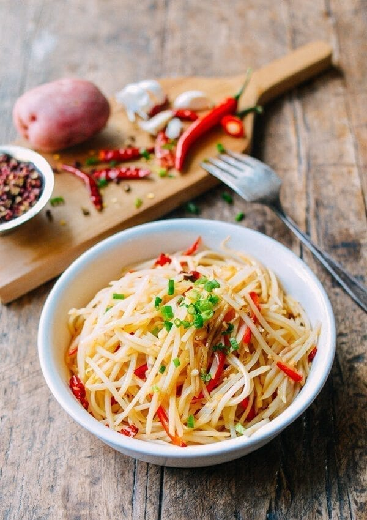

Chinese Potato Stir-Fry
Home

Description
Sichuan stir-fried potatoes (土豆丝) is a pretty well-known, common dish in China,
but it's not nearly as well known in other countries.
Ingredients
- 2 large red skinned potatoes
- 2 tablespoons oil
- 1 tablespoon Sichuan peppercorns
- 2 thin slices of ginger (minced)
- 2 cloves garlic (minced)
- 3-6 dried red chilies (de-seeded and chopped)
- 1 long red or green hot pepper (de-seeded and julienned)
- 1 teaspoon light soy sauce
- ½ teaspoon sugar
- 1 teaspoon white vinegar
- 1/2 teaspoon sesame oil
- 1 tablespoon chicken stock (or water)
- Salt to taste
- 1 scallion (chopped)
Steps
-
Peel and julienne the potatoes. Soak them in fresh, cold water a couple times
(until you can soak them and the water is somewhat clear). Drain and set aside,
but don't let them sit longer than 20 minutes, as they'll turn brown.
-
Heat oil in a wok over medium heat, and add the Sichuan peppercorns (make sure they don't burn).
When the peppercorns are fragrant, turn off the heat and scoop all the peppercorns out,
leaving the oil in the wok. Discard the used peppercorns.
-
Over medium heat, add the ginger, garlic and chilies to the oil. Cook for a minute,
and add the potatoes and julienned peppers. Turn the heat up to high and stir-fry for 30 seconds.
Add the soy sauce, sugar, vinegar, sesame oil, chicken stock (or water), and salt.
Stir-fry everything for a minute and cover for 45 seconds. Uncover, stir in the scallions, and serve!